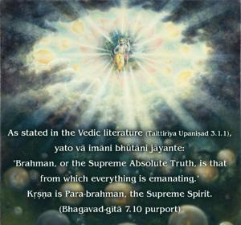
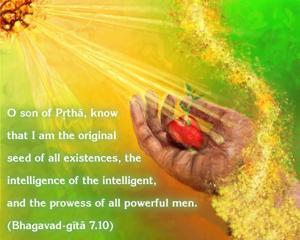
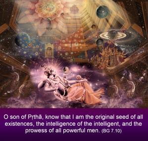

O son of Pṛthā, know that I am the original seed of all existences, the intelligence of the intelligent, and the prowess of all powerful men.



Bījam means seed; Kṛṣṇa is the seed of everything. There are various living entities, movable and inert. Birds, beasts, men and many other living creatures are moving living entities; trees and plants, however, are inert – they cannot move, but only stand. Every entity is contained within the scope of 8,400,000 species of life; some of them are moving and some of them are inert. In all cases, however, the seed of their life is Kṛṣṇa. As stated in Vedic literature, Brahman, or the Supreme Absolute Truth, is that from which everything is emanating. Kṛṣṇa is Para-brahman, the Supreme Spirit. Brahman is impersonal and Para-brahman is personal. Impersonal Brahman is situated in the personal aspect – that is stated in Bhagavad-gītā. Therefore, originally, Kṛṣṇa is the source of everything. He is the root. As the root of a tree maintains the whole tree, Kṛṣṇa, being the original root of all things, maintains everything in this material manifestation. This is also confirmed in the Vedic literature (Kaṭha Upaniṣad 2.2.13):
nityo nityānāṁ cetanaś cetanānām
eko bahūnāṁ yo vidadhāti kāmān
He is the prime eternal among all eternals. He is the supreme living entity of all living entities, and He alone is maintaining all life. One cannot do anything without intelligence, and Kṛṣṇa also says that He is the root of all intelligence. Unless a person is intelligent he cannot understand the Supreme Personality of Godhead, Kṛṣṇa.